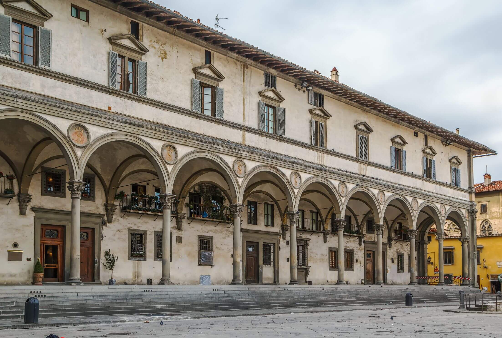
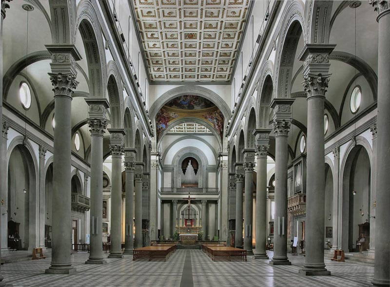

Edificios y arquitectos de la arquitectura renacentista
Filippo Brunelleschi (1377- 1445)
Brunelleschi, padre de la arquitectura renacentista florentina, que presenta un estilo caracterizado por la pureza de las líneas, la simplicidad y la armonía en la distribución de los volúmenes en el espacio. Así, Brunelleschi fue el arquitecto más importante del siglo XV marcando su obra un punto de inflexión del gótico al Renacimiento, siendo la cúpula de la Catedral de Florencia la obra arquitectónica que marca ese cambio. Aunque el trabajo no es puramente renacentista, al estar en su origen conceptos constructivos góticos, para su construcción, Brunelleschi analizó las características de la arquitectura romana para levantar una cúpula de mampostería de grandes dimensiones.
Obras
-
La catedral de Florencia

-
Hospital de los Inocentes de Florencia

-
Basílica florentina de San Lorenzo

-
Basílica de Santo Spirito

Leon Battista Alberti (1404-1472)
Leon Battista Alberti fue otro de los arquitectos del Renacimiento italiano más importantes. Fue arquitecto y el primer teórico del arte del Renacimiento.
Obras
-
Palacio Rucellai

-
Templo Malatestiano

-
Iglesia de San Sebastián (Mantua)

-
Basílica de San Andrés (Mantua)

-
Centro histórico de Pienza

Donato d'Angelo Bramante (1443/1444- 1514)
Bramante es conocido como el artista que introdujo el Renacimiento en Roma. Este artista llevó a esta ciudad todas las innovaciones arquitectónicas del norte de Italia tras formarse en los talles de Urbino, una de las capitales artísticas del Quattrocento. Pero, con sus diseños sobrios y elegantes, Bramante rompió con la tradición arquitectónica de ese período.
Obras
-
El templete de San Pietro in Montorio

-
El llamado Palacio de los Papas

-
El proyecto de la nueva Basílica de San Pedro del Vaticano

Miguel Ángel Buonarrotti (1475-1564)
Seguimos descubriendo a los arquitectos del Renacimiento italiano más importantes para hablar de uno imprescindible: Miguel Ángel. Se presenta como un transgresor de las normas e imprime un gran dinamismo a sus obras, mostrando un espíritu anticlásico y un sentimiento profundamente trágico.
Obras
-
El David o los frescos de la Capilla Sixtina

-
La fachada de la iglesia florentina de San Lorenzo
-
El ricetto de la Biblioteca Laurenziana

-
La magnífica escalera del vestíbulo

Andrea Palladio (1508 -1580)
Palladio fue uno de los grandes arquitectos y teóricos de la arquitectura, siendo uno de los diseñadores más destacados de la República de Venecia. Fue autor e la obra de numerosas villas, iglesias y palacios con un estilo muy personal, en el que se conjuga el repertorio clásico. Publicó Los cuatro libros de arquitectura (1570) y su estilo, el paladianismo, inspiró a arquitectos de siglos posteriores.
Obras